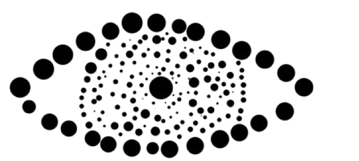
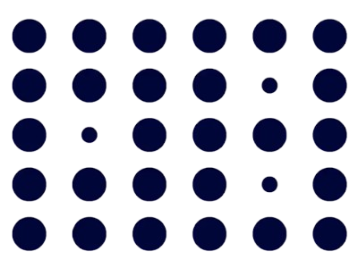
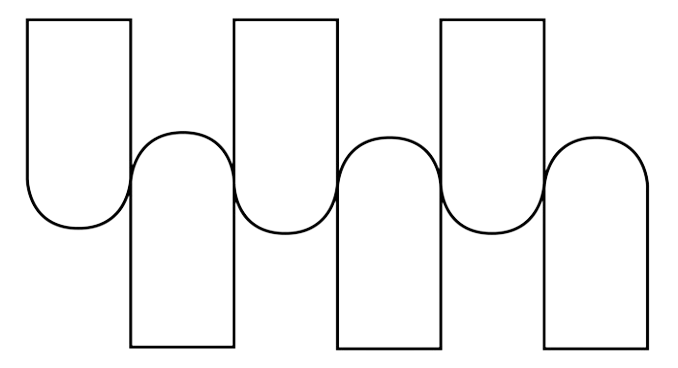
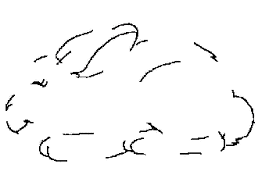
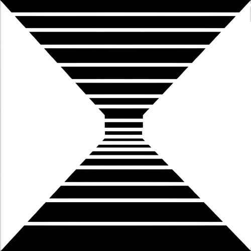
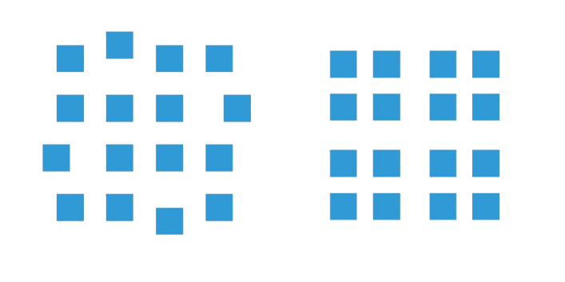
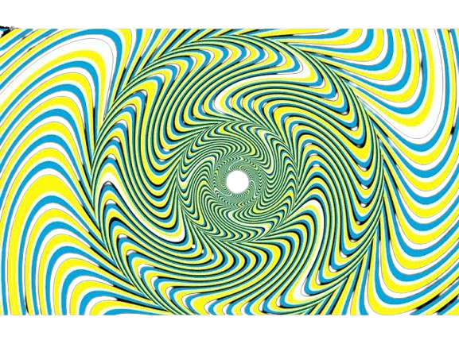

Proximidad
Los elementos que están cerca unos de otros tienden a percibirse como un grupo o conjunto, aunque sean distintos en forma o color. Nuestro cerebro organiza la información visual automáticamente, buscando patrones y relaciones. Por ejemplo, si vemos varias filas de puntos, aunque cada punto sea diferente, los puntos que están más juntos se perciben como parte de un mismo grupo. Este principio se aplica mucho en diseño web, como en menús o listas, para indicar que ciertos elementos están relacionados.
Los elementos cercanos se perciben como un grupo, aunque sean distintos en forma o color.
Semejanza
Los objetos que comparten características visuales como color, forma, tamaño o textura se perciben como parte de un mismo grupo. La semejanza ayuda a que el usuario entienda rápidamente la relación entre elementos sin necesidad de texto explicativo. Por ejemplo, botones del mismo color y forma se perciben como acciones similares, aunque estén separados en la pantalla. Este principio facilita la coherencia visual y la navegación intuitiva en interfaces digitales.
Elementos similares en color, forma o tamaño tienden a ser percibidos como parte de un mismo grupo.
Continuidad
El ojo humano tiende a seguir líneas, curvas o patrones continuos, aunque estén incompletos o conecten varios elementos. Preferimos ver formas suaves y continuas en lugar de fragmentadas o dispersas. Por ejemplo, una serie de flechas que apuntan en la misma dirección guía la mirada de forma natural. En diseño web, la continuidad ayuda a crear flujos visuales claros, como menús, carruseles o guías paso a paso.
El ojo sigue patrones y líneas continuas, uniendo elementos aunque no estén físicamente conectados.
Cierre
Nuestro cerebro completa automáticamente figuras incompletas para formar una imagen coherente. Aunque falten partes de un objeto, nuestra percepción “rellena los huecos” para que tenga sentido. Por ejemplo, un círculo dibujado con interrupciones en su contorno seguirá siendo percibido como un círculo. Este principio se usa mucho en logotipos, iconos y elementos visuales minimalistas.
La mente tiende a completar figuras incompletas para percibirlas como un todo.
Figura-fondo
Distinguimos un objeto principal (figura) del fondo que lo rodea, permitiendo enfocarnos en lo más importante. La figura atrae nuestra atención, mientras que el fondo queda en un segundo plano. Por ejemplo, un texto sobre un fondo uniforme se lee fácilmente porque el contraste resalta la figura principal. Este principio es fundamental en interfaces para jerarquizar información y evitar confusión visual.
El cerebro distingue entre un objeto principal (figura) y el fondo que lo rodea.
Simetria y orden
Preferimos percibir formas equilibradas, ordenadas y simples. Nuestro cerebro organiza la información de la manera más clara y estable posible, buscando la máxima simplicidad y armonía. Por ejemplo, un diseño con columnas alineadas y proporciones equilibradas resulta agradable y fácil de comprender. En UX, esto ayuda a que la interfaz se sienta organizada y profesional.
Los elementos simétricos se perciben como parte de un mismo grupo y generan sensación de equilibrio.
Región común
Los elementos que comparten un área delimitada o están unidos por una línea o contorno se perciben como relacionados. Incluso si no están muy cerca, la región común los agrupa visualmente. Por ejemplo, un cuadro alrededor de varios botones indica que pertenecen a un mismo conjunto de acciones. Este principio se usa para crear secciones visuales claras y mejorar la jerarquía en la página.
Elementos que se mueven en la misma dirección se perciben como parte de un grupo.
Destino común
Los objetos que se mueven o apuntan en la misma dirección se perciben como parte de un mismo grupo con un objetivo compartido. Por ejemplo, flechas que avanzan hacia la derecha sugieren continuidad y propósito. En diseño digital, este principio ayuda a guiar la atención del usuario y a indicar relaciones entre elementos interactivos, como en animaciones o procesos paso a paso.
La experiencia previa y la familiaridad hacen que percibamos ciertos patrones de manera instantánea.